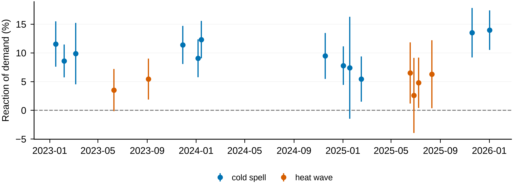
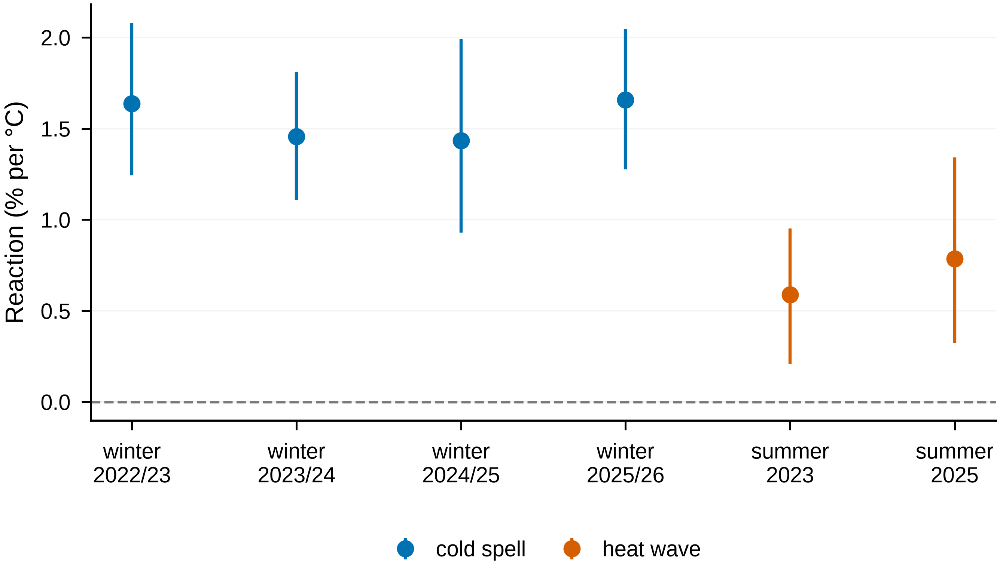
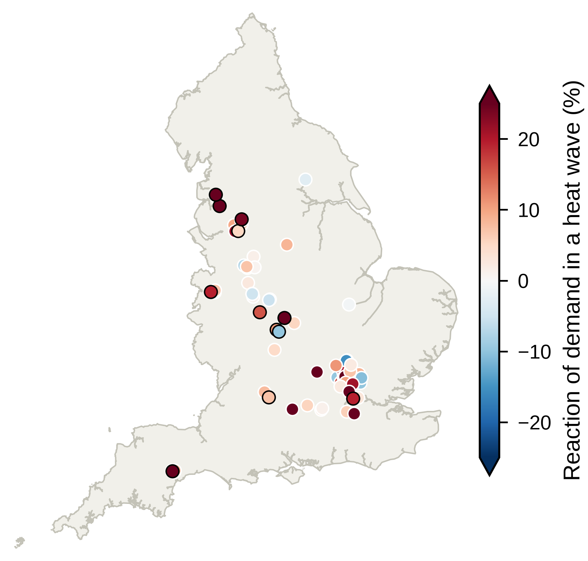
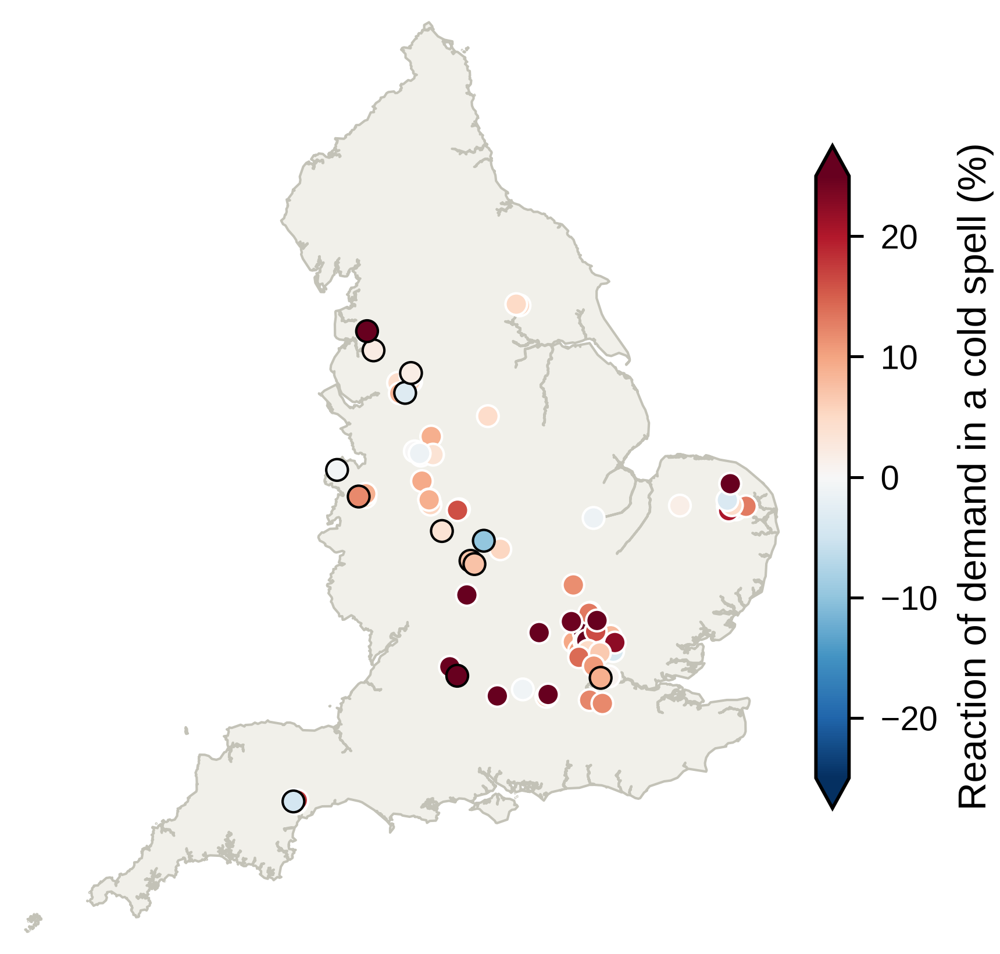
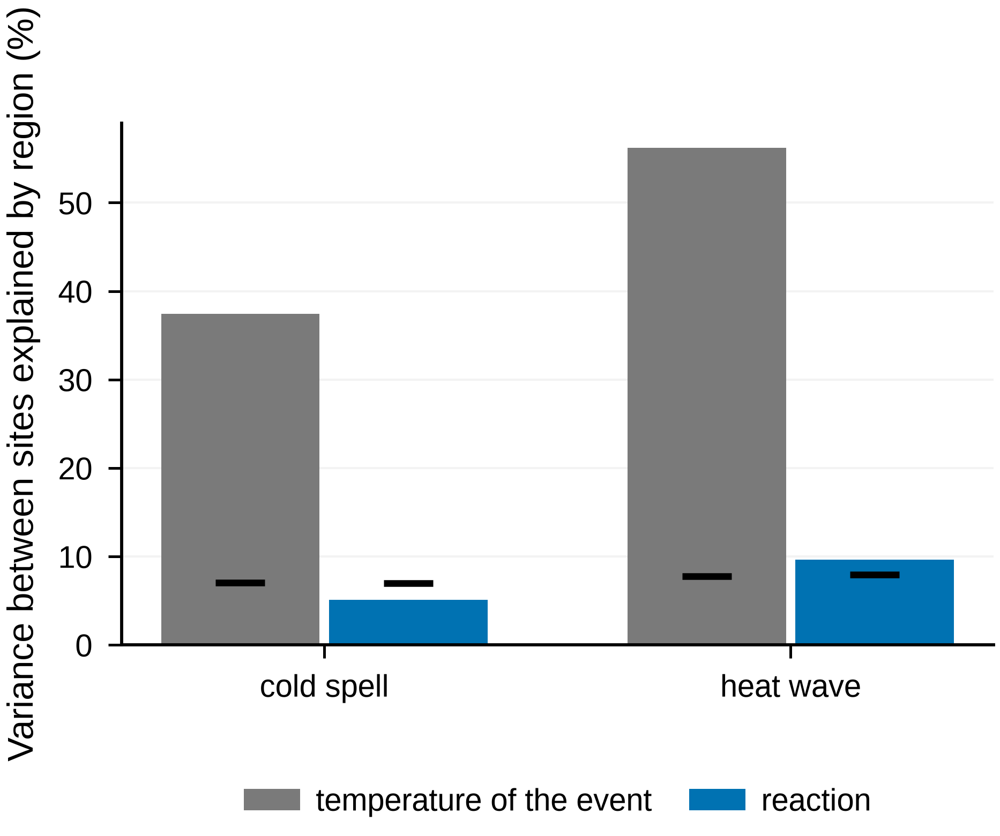
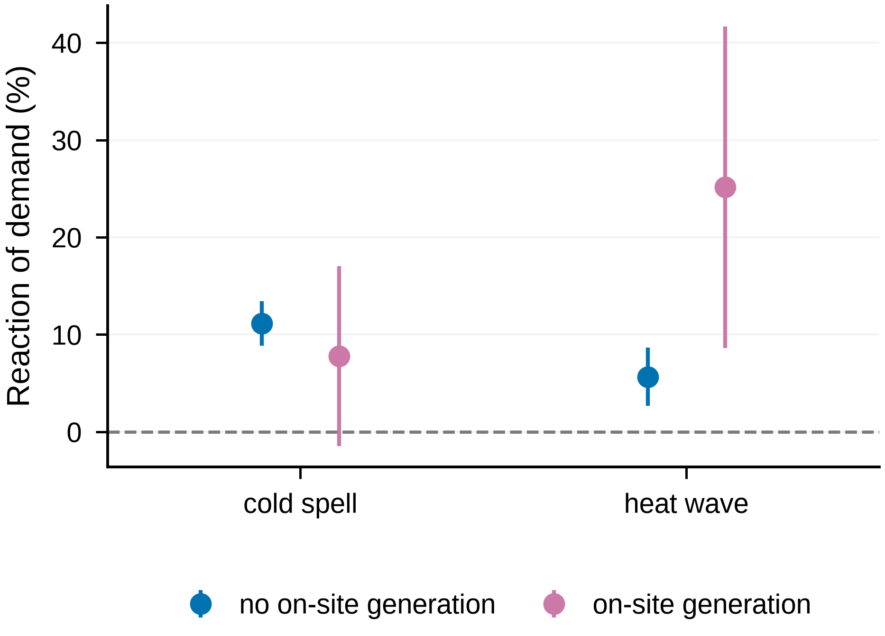
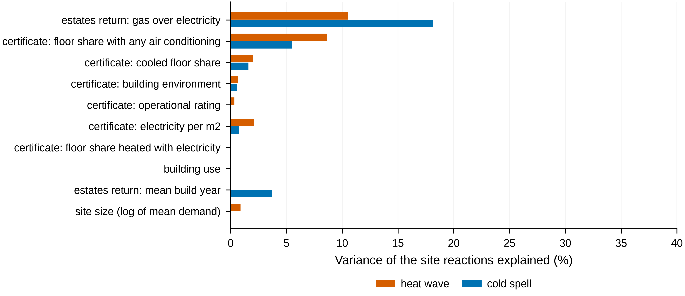

Heat waves and cold spells at the sites: the reaction, when, where, and what explains it
Run on 15 November 2026, on CPU. Command: extreme-events. Module:
code/src/sense_energy/analysis/extreme_events.py. Tables in code/reports/extreme_events/,
figures from code/scripts/extreme_events/. The kickoff deck (doc/kickoff_deck/) is built on
this page.
The earlier weather work (weather_and_cooling.md) estimates what a degree does to a site's electricity. This page asks a different question: what happens in an event. It takes the catalogue of heat waves and cold spells, measures each site's reaction in each event, and sets the reactions against time (day of the event, hour of the day, year), space (neighbours, regions, trusts) and the information that exists about a site (on-site generation, the Display Energy Certificate, the estates return).
The answers in short
- Cold acts at once and all day. Heat builds, and comes in the evening. In a cold spell the sites without on-site generation use 11 % more electricity, at every hour, from the first day. In a heat wave they use 6 % more, but almost nothing on the first day and in the morning: per degree, the reaction from the third day on is 2.4 times that of the first day (0.31 to 0.76 % per °C; difference +0.44, 95 % interval 0.17 to 0.72), and it sits between 16:00 and 22:00 (+9 %; 08:00 to 12:00: +1 %).
- The weather is regional, the reaction is not. The NHS region accounts for 56 % of the between-site differences in heat-wave temperature and 37 % in cold-spell temperature, and for 9 % and 5 % of the differences in reaction, which is what chance gives (8 % and 7 %). Neighbouring sites do not react alike (Moran's I −0.02 and 0.01; the temperature: 0.54 and 0.80). Sites of one trust do not either.
- The reaction belongs to the site. A site's reaction in half of its events explains 37 % (heat) and 56 % (cold) of its reaction in the other half; the reliability of the full measure is 0.70 and 0.89.
- On-site generation turns the reaction around. At the sites with CHP the grid import rises by 25 % in heat waves (95 % interval 9 to 42; 11 of 12 sites rise; +41 % from 16:00 to 22:00) against 6 % elsewhere, and by 2 % in cold spells where the plant follows the heat demand (−4 to +8; 8 sites) against 11 % elsewhere. For a site with a plant, the heat wave and not the cold spell is the event at the grid connection.
- The certificate explains little. At the sites without on-site generation, the building environment, the operational rating, the electricity per m² and the electric heating share of the Display Energy Certificate each explain 0 to 2 % of the differences in reaction. The floor share with any air conditioning explains 9 % (heat) and 6 % (cold). The best single descriptor is the gas-to-electricity ratio of the estates return: 11 % (heat) and 18 % (cold).
- No trend over the record. The reaction per degree is the same in each winter (1.4 to 1.7 % per °C) and in the summers of 2023 and 2025 (0.6 and 0.8).
1. Events and the measure
The events are those of weather_events (section 3 of the weather page): a heat wave at a
site is three or more days with a daily maximum at or above the Met Office county threshold
(25 to 28 °C); a cold spell is two or more days with a daily mean at or below 2 °C (the
UKHSA cold-alert criterion). A national event is a run of days with at least 5 % of the sites in
a site event. The electricity record (7 December 2022 to 8 May 2026) holds 7 national heat waves
and 14 national cold spells; 13 of the cold spells have scored site-days.
Reaction. Each site-day gets a reference: the median demand of the same weekday one, two and three weeks before and after, without the days that are themselves in a heat wave or cold spell at the site, bank holidays and the days from 21 December to 3 January. At least two reference days are needed. The reaction of a set of days is the summed demand over the summed reference, in per cent (100 × log ratio). Sums are used, not the mean of daily ratios, because the grid import of a site with a plant can be near zero on single days. The same difference for the temperature (daily maximum for heat waves, daily mean for cold spells) is the size of the event at the site in degrees: 7.9 °C on average in heat waves, 6.7 °C in cold spells.
Sites. 134 sites have half-hourly electricity. 42 are left out of every site-level result
because their meter set is incomplete or changes (meter_gaps, partial_supply,
aggregate_supply in the coverage flags); 92 remain, 14 of them with on-site generation (the
CHP sample of chp_dispatch), 76 with a Display Energy Certificate. A site needs three scored
event days to get a reaction: 88 sites for cold spells, 76 for heat waves.
What the measure is and is not. It is a comparison with nearby ordinary days of the same site, so it carries no national day shocks only as far as the reference weeks are ordinary; the fixed-effect estimates of the weather page (section 5) remove them fully and give 1.1 to 1.4 % per °C for cold and 1.5 to 2 % per °C for heat. The reactions here, per degree, are of that size for cold (1.4 to 1.9) and lower for heat (0.3 to 0.8 per °C of daily maximum against the reference days), because the heat-wave dose is measured on the daily maximum. The reference days of a heat wave are themselves warm days; the measure is the reaction to the event, not to summer.

event_timeline PDF| event_id | type | start | days | degrees | sites_no_plant | no_plant_pct | no_plant_lo | no_plant_hi | sites_plant | plant_pct | summed_no_plant_pct | summed_plant_pct |
|---|---|---|---|---|---|---|---|---|---|---|---|---|
| cold_spell_20221206 | cold spell | 2022-12-06 | 13 | 7.9 | 6 | 7.5 | -1.4 | 16.4 | 1 | -7.8 | 4.3 | -7.8 |
| cold_spell_20230116 | cold spell | 2023-01-16 | 10 | 6.9 | 39 | 11.5 | 7.6 | 15.5 | 7 | 2.8 | 6.7 | 2.3 |
| cold_spell_20230206 | cold spell | 2023-02-06 | 3 | 5.1 | 45 | 8.6 | 5.7 | 11.5 | 6 | 0.8 | 6.1 | -2 |
| cold_spell_20230307 | cold spell | 2023-03-07 | 5 | 7 | 23 | 9.9 | 4.5 | 15.2 | 10 | 4 | 4.8 | -3.2 |
| cold_spell_20231129 | cold spell | 2023-11-29 | 5 | 8 | 64 | 11.4 | 8.1 | 14.7 | 13 | 11.1 | 7.6 | 5.9 |
| cold_spell_20240106 | cold spell | 2024-01-06 | 5 | 7.6 | 61 | 9.1 | 5.8 | 12.3 | 11 | 6.8 | 6 | 1.6 |
| cold_spell_20240114 | cold spell | 2024-01-14 | 6 | 8 | 71 | 12.3 | 9 | 15.6 | 13 | 3.8 | 7.9 | -1.2 |
| cold_spell_20241118 | cold spell | 2024-11-18 | 5 | 7.2 | 67 | 9.5 | 5.5 | 13.5 | 12 | 6.7 | 7.3 | -0.2 |
| cold_spell_20250102 | cold spell | 2025-01-02 | 11 | 5.2 | 73 | 7.8 | 4.4 | 11.1 | 12 | 18.7 | 6.9 | 22.4 |
| cold_spell_20250118 | cold spell | 2025-01-18 | 2 | 2.4 | 46 | 7.4 | -1.5 | 16.3 | 5 | -37.9 | 4.7 | -98.3 |
| cold_spell_20250216 | cold spell | 2025-02-16 | 3 | 4 | 40 | 5.4 | 1.5 | 9.4 | 2 | -51.5 | 5.7 | -98.1 |
| cold_spell_20251119 | cold spell | 2025-11-19 | 3 | 9.1 | 59 | 13.5 | 9.2 | 17.8 | 11 | 15.8 | 8.8 | 36.8 |
| cold_spell_20260102 | cold spell | 2026-01-02 | 5 | 8.1 | 74 | 13.9 | 10.5 | 17.4 | 12 | 0.3 | 10.6 | 3.1 |
| heatwave_20230610 | heatwave | 2023-06-10 | 7 | 8 | 22 | 3.5 | -0.2 | 7.2 | 9 | 23.8 | 6.5 | 42.9 |
| heatwave_20230904 | heatwave | 2023-09-04 | 7 | 8.9 | 62 | 5.4 | 1.9 | 9 | 10 | 22.1 | 9.4 | 50.8 |
| heatwave_20240729 | heatwave | 2024-07-29 | 3 | 7.7 | 5 | -2.7 | -14.6 | 9.1 | 4 | 4.7 | -8.7 | 7.6 |
| heatwave_20250618 | heatwave | 2025-06-18 | 4 | 6.3 | 32 | 6.5 | 1.2 | 11.8 | 7 | 8.7 | 9.4 | 15.8 |
| heatwave_20250627 | heatwave | 2025-06-27 | 5 | 6.8 | 11 | 2.6 | -4 | 9.1 | 2 | 18.3 | 2.2 | 18.1 |
| heatwave_20250709 | heatwave | 2025-07-09 | 5 | 6.3 | 37 | 4.8 | 0.4 | 9.2 | 8 | 30.2 | 5.7 | 43.9 |
| heatwave_20250811 | heatwave | 2025-08-11 | 5 | 8.2 | 21 | 6.3 | 0.4 | 12.2 | 5 | 27.7 | 7.7 | 46.4 |
source: code/reports/extreme_events/table_events.csv (20 rows shown)
Every cold spell with at least ten sites raises demand at the sites without on-site generation (5 to 14 %); every heat wave but the small one of July 2024 does (3 to 7 %). The columns for the sites with a plant show what section 4 is about: their import rises by 20 to 30 % in the large heat waves and stays below that of the other sites in most cold spells. In two short cold spells of early 2025 the summed import of the few plant sites in the event fell to a third: a plant came back during the event.
2. Time
2.1 Day by day (event_time, event_temperature, build_up)
event_time PDFevent_temperature PDFThe temperature steps on day 0 in both kinds of event (6 to 7 °C beyond the reference days). The demand of a cold spell steps with it: +9 % on day 0, +10 % on day 1. The demand of a heat wave does not: +2 % on day 0, +5 % on day 1, +7 % on days 2 and 3, with the temperature unchanged. After the event both fall back within a week.
build_up PDF| type | sites | first_day_pct_per_degree | third_day_on_pct_per_degree | difference | lo | hi |
|---|---|---|---|---|---|---|
| cold spell | 75 | 1.45 | 1.86 | 0.42 | 0.1 | 0.73 |
| heatwave | 50 | 0.31 | 0.76 | 0.44 | 0.17 | 0.72 |
source: code/reports/extreme_events/build_up.csv (2 rows shown)
The test is paired within sites: the reaction per degree from the third day on minus that of the first day. Heat waves: 0.31 to 0.76 % per °C, +0.44 (0.17 to 0.72), 50 sites. Cold spells: 1.45 to 1.86, +0.42 (0.10 to 0.73), 75 sites. Both build by the same absolute amount; for heat that is a factor of 2.4, for cold a factor of 1.3. A model that takes the temperature of the day alone overstates the first day of a heat wave and understates the third.
2.2 Hour by hour (hour_profile_heatwave, hour_profile_cold_spell)
hour_profile_heatwave PDFhour_profile_cold_spell PDFAt the sites without on-site generation a cold spell lifts every hour by 9 to 13 %. A heat wave lifts the hours from 08:00 to 12:00 by 1 % and the hours from 16:00 to 22:00 by 9 %; the reaction stays above 5 % until after midnight. The load of a heat wave falls on the evening, when the national system has its peak, and on the night, when the building gives its heat back. At the sites with a plant the import in a heat wave rises by 41 % from 16:00 to 22:00.
2.3 Year by year (seasons)

seasons PDFseasons PDF| type | season | sites | site_days | reaction_pct | degrees | pct_per_degree | lo | hi |
|---|---|---|---|---|---|---|---|---|
| cold spell | winter 2022/23 | 56 | 504 | 10.91 | 6.66 | 1.64 | 1.24 | 2.08 |
| cold spell | winter 2023/24 | 71 | 816 | 11.33 | 7.78 | 1.46 | 1.11 | 1.81 |
| cold spell | winter 2024/25 | 73 | 858 | 7.34 | 5.12 | 1.43 | 0.93 | 1.99 |
| cold spell | winter 2025/26 | 74 | 357 | 13.97 | 8.43 | 1.66 | 1.28 | 2.05 |
| heatwave | summer 2023 | 63 | 431 | 5.13 | 8.72 | 0.59 | 0.21 | 0.95 |
| heatwave | summer 2025 | 49 | 331 | 5.25 | 6.68 | 0.79 | 0.32 | 1.34 |
source: code/reports/extreme_events/seasons.csv (6 rows shown)
No trend: 1.4 to 1.7 % per °C in each of the four winters, 0.6 and 0.8 in the summers of 2023 and 2025, with overlapping intervals. Three summers and four winters cannot show a slow change.
3. Space (map_reaction_heatwave, map_reaction_cold_spell, region_share)

map_reaction_heatwave PDF
map_reaction_cold_spell PDF
region_share PDFmap_reaction_heatwave PDFmap_reaction_cold_spell PDFregion_share PDF| type | sites | quantity | n | morans_i | p | neighbour_km | region_share | region_share_chance | region_p | trust_sites | trusts | trust_share | trust_share_chance | trust_p |
|---|---|---|---|---|---|---|---|---|---|---|---|---|---|---|
| cold spell | all sites | reaction | 88 | 0.01 | 0.275 | 38.224 | 0.051 | 0.07 | 0.636 | 84 | 16 | 0.152 | 0.185 | 0.676 |
| cold spell | all sites | size of the event | 88 | 0.795 | 0.001 | 38.224 | 0.374 | 0.07 | 0.001 | 84 | 16 | 0.866 | 0.179 | 0.001 |
| cold spell | no on-site generation | reaction | 75 | 0.016 | 0.227 | 38.077 | 0.046 | 0.081 | 0.782 | 70 | 13 | 0.083 | 0.172 | 0.943 |
| cold spell | no on-site generation | size of the event | 75 | 0.799 | 0.001 | 38.077 | 0.365 | 0.083 | 0.001 | 70 | 13 | 0.873 | 0.172 | 0.001 |
| heatwave | all sites | reaction | 76 | -0.018 | 0.51 | 38.033 | 0.096 | 0.079 | 0.282 | 72 | 13 | 0.174 | 0.165 | 0.39 |
| heatwave | all sites | size of the event | 76 | 0.54 | 0.001 | 38.033 | 0.562 | 0.078 | 0.001 | 72 | 13 | 0.694 | 0.169 | 0.001 |
| heatwave | no on-site generation | reaction | 64 | -0.033 | 0.62 | 36.389 | 0.093 | 0.096 | 0.455 | 58 | 10 | 0.199 | 0.157 | 0.26 |
| heatwave | no on-site generation | size of the event | 64 | 0.518 | 0.001 | 36.389 | 0.575 | 0.097 | 0.001 | 58 | 10 | 0.657 | 0.155 | 0.001 |
source: code/reports/extreme_events/spatial.csv (8 rows shown)
Two tests, each for the size of the event at the site and for the reaction of the site:
- Neighbours (Moran's I on the eight nearest sites, median distance to the eighth 38 km, 999 permutations). The size of the event is alike among neighbours (0.54 for heat waves, 0.80 for cold spells, p = 0.001). The reaction is not (−0.02, p = 0.51; 0.01, p = 0.28).
- Regions and trusts (share of the between-site variance, permutation test). The region accounts for 56 % and 37 % of the size of the event and for 9 % and 5 % of the reaction (chance: 8 % and 7 %; p = 0.28 and 0.64). The trust (13 and 16 trusts with two or more sites) accounts for 69 % and 87 % of the size of the event, because the sites of a trust are close together, and for 17 % and 15 % of the reaction (chance: 17 % and 19 %; p = 0.39 and 0.68).
The same holds without the sites with on-site generation. An event is a regional fact; what a site does in it is not, and it is not a trust fact either.
The reaction is a property of the site (reliability.csv). Splitting each site's events
into odd and even ones in date order, the reaction in one half explains 37 % (heat, 59 sites)
and 56 % (cold, 88 sites) of the variance of the reaction in the other half; stepped up to all
events the reliability is 0.70 and 0.89.
| type | sites | split_half_r | reliability | other_events_r2 |
|---|---|---|---|---|
| cold spell | 88 | 0.803 | 0.891 | 0.557 |
| heatwave | 59 | 0.54 | 0.701 | 0.368 |
source: code/reports/extreme_events/reliability.csv (2 rows shown)
4. Site information
4.1 On-site generation (plant_reaction)

plant_reaction PDFplant_reaction PDFTable: 26 rows
| type | descriptor | level | sites | reaction_pct | lo | hi | median_pct | share_rising | extra_kw_per_site | mean_kw |
|---|---|---|---|---|---|---|---|---|---|---|
| cold spell | on-site generation (CHP) | no on-site generation | 75 | 11.1 | 8.9 | 13.4 | 8.9 | 0.9 | 5.1 | 58.5 |
| cold spell | on-site generation (CHP) | on-site generation | 13 | 7.8 | -1.5 | 17 | 3.6 | 0.7 | 15.3 | 385.2 |
| cold spell | building use | acute inpatient | 3 | 4.8 | 3.6 | 6 | 4.7 | 1 | 38.5 | 744.7 |
| cold spell | building use | community inpatient | 4 | 5.4 | -7.2 | 18.1 | 3.7 | 0.8 | 2.1 | 22.8 |
| cold spell | building use | mental health | 20 | 10.4 | 7.6 | 13.2 | 9 | 1 | 4.2 | 31.2 |
| cold spell | building use | non-inpatient | 29 | 10.2 | 6.2 | 14.1 | 6.7 | 0.8 | 4.2 | 38.2 |
| cold spell | certificate: building environment | mechanical ventilation | 13 | 9 | 4.9 | 13.2 | 6.7 | 0.9 | 5.2 | 75.6 |
| cold spell | certificate: building environment | mixed mode or air conditioning | 11 | 14 | 8.2 | 19.8 | 11.5 | 1 | 14.1 | 206.6 |
| cold spell | certificate: building environment | natural ventilation | 36 | 9.8 | 6.3 | 13.3 | 6.3 | 0.9 | 2.5 | 22.3 |
| cold spell | estates return: heat pumps | heat pumps | 4 | 3.4 | -1.3 | 8 | 4.5 | 0.8 | 28.3 | 615.7 |
| cold spell | estates return: heat pumps | no heat pumps | 52 | 10.1 | 7.7 | 12.5 | 8.9 | 0.9 | 4.2 | 30.6 |
| cold spell | plant follows heat demand | False | 5 | 17.3 | -8.6 | 43.2 | 7.4 | 0.8 | 50.3 | 434.3 |
| cold spell | plant follows heat demand | True | 8 | 1.8 | -3.9 | 7.6 | 1.9 | 0.6 | -6.6 | 354.5 |
| heatwave | on-site generation (CHP) | no on-site generation | 64 | 5.6 | 2.6 | 8.7 | 4.7 | 0.7 | 4.8 | 65.8 |
| heatwave | on-site generation (CHP) | on-site generation | 12 | 25.1 | 8.6 | 41.7 | 19.5 | 0.9 | 207.1 | 382.3 |
| heatwave | building use | acute inpatient | 3 | 7.8 | 2.2 | 13.5 | 8.6 | 1 | 60.3 | 744.7 |
| heatwave | building use | community inpatient | 3 | -1.4 | -39.3 | 36.6 | 7.1 | 0.7 | 1 | 25.5 |
| heatwave | building use | mental health | 19 | 6.2 | -0.4 | 12.8 | 4.6 | 0.7 | 1.5 | 30 |
| heatwave | building use | non-inpatient | 26 | 4.1 | 0 | 8.3 | 2.3 | 0.7 | 2.4 | 41.3 |
| heatwave | certificate: building environment | mechanical ventilation | 11 | 3.8 | -4.1 | 11.7 | 5.5 | 0.6 | 5.3 | 82.7 |
| heatwave | certificate: building environment | mixed mode or air conditioning | 9 | 9.7 | 0.7 | 18.7 | 8.6 | 0.9 | 20.2 | 246.3 |
| heatwave | certificate: building environment | natural ventilation | 32 | 3.7 | 0 | 7.5 | 3 | 0.7 | 1.3 | 24.6 |
| heatwave | estates return: heat pumps | heat pumps | 4 | 7.3 | 3.8 | 10.7 | 7.1 | 1 | 48.4 | 615.7 |
| heatwave | estates return: heat pumps | no heat pumps | 47 | 4.6 | 1.1 | 8.1 | 3.2 | 0.7 | 1.7 | 31.8 |
| heatwave | plant follows heat demand | False | 5 | 27.3 | -22.2 | 76.8 | 10.5 | 0.8 | 313.9 | 434.3 |
| heatwave | plant follows heat demand | True | 7 | 23.6 | 11.5 | 35.8 | 19.5 | 1 | 130.8 | 345.1 |
source: code/reports/extreme_events/group_means.csv (26 rows shown)
- Heat waves. Import at the 12 sites with a plant rises by 25 % (9 to 42; median 19 %; 11
of 12 rise), against 6 % (3 to 9) at the 64 other sites: 19 points more with the size of the
event held fixed (4 to 34, p = 0.01). In kilowatts: 207 kW more import per site on a
heat-wave day (mean import 382 kW), against 5 kW at the other sites (mean demand 66 kW). At
the seven sites whose plant follows the heat demand (
chp_dispatch), every one rises (24 %, 11 to 36). - Cold spells. Import at the 13 sites with a plant rises by 8 % (−1 to 17; median 4 %), against 11 % (9 to 13) elsewhere. At the eight heat-led sites it rises by 2 % (−4 to 8); the five others are wide (17 %, −9 to 43).
The plausible mechanism for both: a plant that follows heat runs flat out in a cold spell and covers the extra electricity, and is turned down in a heat wave when the site needs little heat, so the import rises by more than the cooling load. The meters cannot confirm it: they show import only. Plant output data would.
4.2 Certificates and the estates return (descriptor_share)

descriptor_share PDFdescriptor_share PDF| type | descriptor | sites | joint_p | adj_r2_gain |
|---|---|---|---|---|
| cold spell | on-site generation (CHP) | 88 | 0.408 | 0.004 |
| cold spell | building use | 56 | 0.051 | -0.022 |
| cold spell | certificate: building environment | 60 | 0.256 | 0.006 |
| cold spell | estates return: heat pumps | 56 | 0.054 | 0.022 |
| cold spell | certificate: cooled floor share | 60 | 0.151 | 0.016 |
| cold spell | certificate: floor share with any air conditioning | 60 | 0.025 | 0.055 |
| cold spell | certificate: floor share heated with electricity | 60 | 0.393 | -0.005 |
| cold spell | certificate: operational rating | 60 | 0.164 | 0 |
| cold spell | certificate: electricity per m2 | 60 | 0.152 | 0.007 |
| cold spell | estates return: gas over electricity | 53 | 0.008 | 0.181 |
| cold spell | estates return: mean build year | 56 | 0.025 | 0.037 |
| cold spell | site size (log of mean demand) | 75 | 0.37 | -0.005 |
| heatwave | on-site generation (CHP) | 76 | 0.014 | 0.17 |
| heatwave | building use | 51 | 0.4 | -0.036 |
| heatwave | certificate: building environment | 52 | 0.418 | 0.007 |
| heatwave | estates return: heat pumps | 51 | 0.135 | -0.016 |
| heatwave | certificate: cooled floor share | 52 | 0.214 | 0.02 |
| heatwave | certificate: floor share with any air conditioning | 52 | 0.019 | 0.087 |
| heatwave | certificate: floor share heated with electricity | 52 | 0.919 | -0.02 |
| heatwave | certificate: operational rating | 52 | 0.314 | 0.003 |
| heatwave | certificate: electricity per m2 | 52 | 0.247 | 0.021 |
| heatwave | estates return: gas over electricity | 48 | 0.032 | 0.105 |
| heatwave | estates return: mean build year | 51 | 0.863 | -0.021 |
| heatwave | site size (log of mean demand) | 64 | 0.061 | 0.009 |
source: code/reports/extreme_events/alignment_fits.csv (24 rows shown)
Table: 38 rows
| type | descriptor | level | sites | mean_reaction_pct | difference_pts | lo | hi | p |
|---|---|---|---|---|---|---|---|---|
| cold spell | on-site generation (CHP) | no on-site generation | 75 | 11.14 | 0 | |||
| cold spell | on-site generation (CHP) | on-site generation | 13 | 7.79 | -3.8 | -12.75 | 5.16 | 0.41 |
| cold spell | building use | acute inpatient | 3 | 4.79 | 0 | |||
| cold spell | building use | community inpatient | 4 | 5.41 | -0.75 | -9.98 | 8.48 | 0.87 |
| cold spell | building use | mental health | 20 | 10.39 | 4.02 | 0.49 | 7.55 | 0.03 |
| cold spell | building use | non-inpatient | 29 | 10.17 | 4.29 | 0.29 | 8.29 | 0.04 |
| cold spell | certificate: building environment | mechanical ventilation | 13 | 9.03 | 0 | |||
| cold spell | certificate: building environment | mixed mode or air conditioning | 11 | 14.03 | 5.45 | -1.25 | 12.15 | 0.11 |
| cold spell | certificate: building environment | natural ventilation | 36 | 9.78 | 1.04 | -4.42 | 6.51 | 0.71 |
| cold spell | estates return: heat pumps | heat pumps | 4 | 3.35 | 0 | |||
| cold spell | estates return: heat pumps | no heat pumps | 52 | 10.1 | 6.49 | 0.03 | 12.95 | 0.05 |
| cold spell | certificate: cooled floor share | per standard deviation | 60 | 1.7 | -0.59 | 3.99 | 0.15 | |
| cold spell | certificate: floor share with any air conditioning | per standard deviation | 60 | 2.54 | 0.38 | 4.7 | 0.02 | |
| cold spell | certificate: floor share heated with electricity | per standard deviation | 60 | 1.06 | -1.35 | 3.47 | 0.39 | |
| cold spell | certificate: operational rating | per standard deviation | 60 | 1.22 | -0.48 | 2.93 | 0.16 | |
| cold spell | certificate: electricity per m2 | per standard deviation | 60 | 1.46 | -0.51 | 3.44 | 0.15 | |
| cold spell | estates return: gas over electricity | per standard deviation | 53 | -3.87 | -6.6 | -1.14 | 0.01 | |
| cold spell | estates return: mean build year | per standard deviation | 56 | 2 | 0.31 | 3.7 | 0.02 | |
| cold spell | site size (log of mean demand) | per standard deviation | 75 | -0.95 | -3.02 | 1.12 | 0.37 | |
| heatwave | on-site generation (CHP) | no on-site generation | 64 | 5.65 | 0 | |||
| heatwave | on-site generation (CHP) | on-site generation | 12 | 25.14 | 19.18 | 4.25 | 34.1 | 0.01 |
| heatwave | building use | acute inpatient | 3 | 7.84 | 0 | |||
| heatwave | building use | community inpatient | 3 | -1.37 | -9.69 | -32.41 | 13.03 | 0.4 |
| heatwave | building use | mental health | 19 | 6.18 | -2.14 | -9.87 | 5.6 | 0.59 |
| heatwave | building use | non-inpatient | 26 | 4.15 | -3.71 | -8.67 | 1.24 | 0.14 |
| heatwave | certificate: building environment | mechanical ventilation | 11 | 3.81 | 0 | |||
| heatwave | certificate: building environment | mixed mode or air conditioning | 9 | 9.69 | 6.7 | -4.44 | 17.84 | 0.24 |
| heatwave | certificate: building environment | natural ventilation | 32 | 3.73 | 0.85 | -7.4 | 9.09 | 0.84 |
| heatwave | estates return: heat pumps | heat pumps | 4 | 7.27 | 0 | |||
| heatwave | estates return: heat pumps | no heat pumps | 47 | 4.59 | -2.96 | -6.76 | 0.85 | 0.13 |
| heatwave | certificate: cooled floor share | per standard deviation | 52 | 2.16 | -1.2 | 5.52 | 0.21 | |
| heatwave | certificate: floor share with any air conditioning | per standard deviation | 52 | 3.51 | 0.67 | 6.36 | 0.02 | |
| heatwave | certificate: floor share heated with electricity | per standard deviation | 52 | -0.22 | -4.54 | 4.09 | 0.92 | |
| heatwave | certificate: operational rating | per standard deviation | 52 | 1.67 | -1.54 | 4.87 | 0.31 | |
| heatwave | certificate: electricity per m2 | per standard deviation | 52 | 2.23 | -1.5 | 5.97 | 0.24 | |
| heatwave | estates return: gas over electricity | per standard deviation | 48 | -4.12 | -7.77 | -0.47 | 0.03 | |
| heatwave | estates return: mean build year | per standard deviation | 51 | 0.24 | -2.49 | 2.97 | 0.86 | |
| heatwave | site size (log of mean demand) | per standard deviation | 64 | 1.91 | -0.05 | 3.87 | 0.06 |
source: code/reports/extreme_events/alignment_terms.csv (38 rows shown)
One regression per descriptor of the site reaction on the descriptor with the size of the event held fixed, robust standard errors, on the sites without on-site generation (the plant would otherwise stand in for every descriptor that goes with large acute hospitals: with the plant sites in, building use, size and the gas ratio all "explain" the heat reaction).
- Display Energy Certificate. Building environment (natural ventilation, mechanical ventilation, mixed mode or air conditioning): joint p = 0.42 (heat) and 0.26 (cold), 1 % of the variance. Operational rating: p = 0.31 and 0.16, 0 %. Electricity per m²: 2 % and 1 %. Floor share heated with electricity: 0 %. Floor share with any air conditioning: +3.5 points per standard deviation in heat waves (0.7 to 6.4, p = 0.02; 9 %) and +2.5 in cold spells (0.4 to 4.7, p = 0.02; 6 %): the sites with more conditioned floor react more to both, which reads as electrically serviced buildings and not as cooling.
- Estates return. Gas-to-electricity ratio: −4.1 points per standard deviation in heat waves (−7.8 to −0.5, p = 0.03; 11 %) and −3.9 in cold spells (−6.6 to −1.1, p = 0.01; 18 %): the more a site runs on gas, the less its electricity reacts, to cold as the weather page found and to heat as well. Building use: mental-health and non-inpatient sites react 4 points more to cold than the three acute hospitals without a plant (p = 0.03 and 0.04; 0 % of the variance after the degrees of freedom). Mean build year: +2.0 points per standard deviation for cold (p = 0.02; 4 %).
- Twenty tests were run and five have p below 0.05, where chance gives one; the weaker ones should not be read alone. The gas ratio (p = 0.008 for cold) is the one that also has a mechanism and an earlier, independent estimate.
The comparison that matters: the best descriptor explains 11 to 18 %, the fields of the certificate 0 to 9 %, and the site's own other events 37 to 56 %. What a site does in an event is stable and is not in the registers.
5. What follows
- For load on the network, the unit of analysis is the site, not the region, and for sites with a plant the season of concern is the summer.
- A forecast or a planning model needs the heat of the last days, not the temperature of the day, and it needs the hour: the evening of the third day is where a heat wave lands. The forecast thread found the consequence from the other side: on heat-wave days the day-ahead forecast secures 33 % of the achievable peak cut against 50 % on the other days of the same site and month (forecast_error_anatomy.md).
- Two data requests would turn the open readings into tests: plant output (does the plant turn down in heat waves?) and the size of cooling plant (recorded on 19 % of recent certificates).
Limits
- 92 sites, 14 with a plant, 7 heat waves: the plant results rest on 12 and 13 sites and have wide intervals; the direction is consistent across events.
- The reference days are close in the calendar, not matched on anything else. A change at a site within three weeks of an event (a meter change, a ward closure) enters its reaction.
- The heat-wave definition is the Met Office's by county; the temperatures are ERA5 at the site (the weather page, section 6, compares it with ERA5-Land and stations).
- Reactions are in per cent of the site's own demand, so small sites count as much as large ones in the means; the summed columns of the event table give the kilowatt view.
- Gas is not in this page.